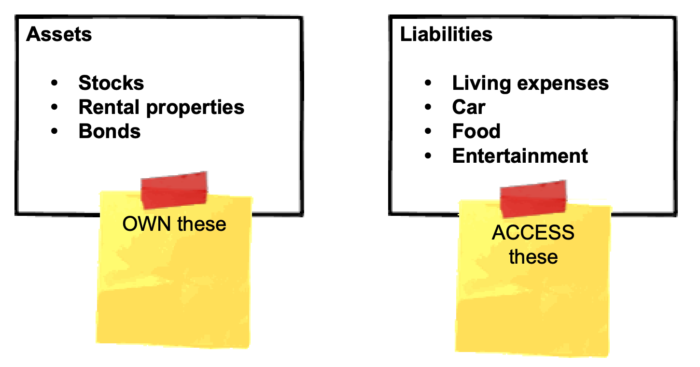

Financial freedom · Part 1
Chapter 4: Why you should own assets, and access liabilities

With this simple concept, you can live beyond your means—and save more money than ever
This section is a three-parter. First, you'll learn the difference between assets and liabilities, then review the benefits of access over ownership, and finally tie the two concepts together.
This strategy can save you tens of thousands of dollars a year, and help you enjoy a "Champagne lifestyle on a beer budget."
So bust open the bubbly, settle in, and pay attention.
Part 1: Assets vs. Liabilities
Assets make money. Liabilities lose money.
Wealthy people buy assets. Poor people buy liabilities.
As you progress through this guide, focus on buying assets such as index funds and rental properties (we'll cover these in the Investing section). The more assets you buy, the faster your wealth will grow, and the sooner you'll reach financial freedom.
Avoid buying liabilities like an expensive new car or high-priced cable package. The more liabilities you buy, the slower your wealth will grow, which pushes your financial freedom further into the future. Worse still, if you buy more liabilities than assets, you'll sink deeper into debt—the opposite of financial freedom.
When you reduce your liabilities, you increase your savings, which you can use to buy more assets.
Liabilities are corrosive to wealth; avoid them whenever possible.
Examples of assets and liabilities
| Assets (Or, Things That Make You Money) | Liabilities (Or, Things That Cost Money) |
|---|---|
| Stocks | Car |
| Bonds | Debt |
| Rental properties | Personal residence |
| Businesses | Food |
| Creative work that generate royalties (e.g. books, music, paintings, etc.) | Subscriptions (phone, cable, Netflix, etc.) |
Part 2: Access vs. Ownership
In Part 1, we learned the importance of buying assets and avoiding liabilities wherever possible. Of course, it's impossible to avoid liabilities completely. We all need to eat and sleep. So while it's important to buy as many assets as possible, you'll still buy things that won't make you money (but will keep you alive).
This is where access vs. ownership comes in. But before we dive in, please, get comfortable, and focus. Because this is one of the most powerful—and least used—strategies in this entire guide.
-
This strategy can literally shave years off your path to financial freedom (I've done this myself, and the results were staggering).
-
It can double, maybe even triple your savings rate— that is, how much money you save and invest.
-
And best of all, you can have an absolute blast doing it.
Please don't breeze through this section. Read it, reflect, then read it again. Internalize it. Then do it.
The concept is this: everything in life is either owned or accessed.
For example, you can own a house... or access one by renting. Or by house sitting. Or living with your family.
Similarly, you can own a car... or access one via Uber, borrowing a friend's car, or taking public transportation.
In most cases, access is far, far better than ownership. Here's why:
-
Access is more flexible. You don't need to worry about paying your mortgage every month. You can always up and leave with nothing more than a 30-day notice in most cases. Flexibility is one of our key principles and helps you become both location and financially independent.
-
Access is transparent. Ownership contains many hidden costs. For example, owning a car costs far more than the sticker price: you need to pay for insurance, gas, maintenance and repair, etc. Same for owning your home. Same for everything you own. When you access something, on the other hand, you know down to the penny how much it costs you. A renter knows their monthly rent; an Uber or Lyft tells you the price before you leave. Access is fully transparent.
-
Access requires less money upfront. As an investor, you want your money working hard for you. Less money tied up in liabilities means more money invested in assets.
-
Access is environmentally friendly. If everyone owns a car, we require more land, highways, and parking spaces than if everyone took the bus or an Uber).
-
Access helps you "live beyond your means". For example, I can stay in a multi-million dollar home by house-sitting—a home I'd never be able to afford on my own. (We'll cover house sitting later in the "reduce your housing expenses" section.)
Part 3: Tying it all together—Own assets; access liabilities
This powerful concept can be summarized in one snazzy little table. Check it out:
| Own these assets: | Access these liabilities: |
|---|---|
| Stocks | Housing |
| Bonds | Car |
| Rental properties | Transportation |
| Businesses | Entertainment |
-
By owning assets, you increase your investment income—a technique that effortlessly increases your savings and wealth.
-
By accessing liabilities, you decrease your expenses. And unlike clipping coupons or skipping that $5 pumpkin-spiced latte, this approach can slash your expenses by tens of thousands of dollars a year.
How to own assets
There are three ways to own assets: buy, create, and inherit.
Buy stocks, bonds, and real estate. Choose which index funds to invest in, then automate the process so you grow wealthier, completely on autopilot. If you want to get your hands dirty, buy a rental property (though I wouldn't recommend it unless you know what you're doing. (We'll cover all these in the Investing section.)
Create your own assets. Earn royalties on your creative work (books, paintings, music, etc.) or start a new business. Really, anything that generates income without you personally delivering the service is considered an asset. (If you deliver the service yourself and can't outsource it, you haven't created an asset—you've created a job.)
Inherit assets. This usually involves a loved one dying. Not recommended.
How to access liabilities
Liabilities are, to a certain extent, inevitable. You gotta eat and sleep, right?
Rather than own liabilities, however, you can "flip the script" and simply access them. Why buy a house when you can live there for free?
Below are several common liabilities—and how you can access them.
| Liabilities | How to access them (rather than own) |
|---|---|
| Home | - Rent rather than buy - Become a house sitter |
| Transportation | - Use Uber/Lyft (for quick rides) - Rent a car with ZipCar (or traditional car rentals) - Ride a bike (rent these in cities as needed, or buy/sell one on Craigslist) - Use public transportation |
| Books/music | - Borrow from your library - Use Spotify/Pandora/Netflix |
Above is just a high-level overview. You'll learn how access liabilities—and save up to tens of thousands of dollars a year—in the Reduce Expenses section, and how to buy assets in the Increase income and Investing sections.